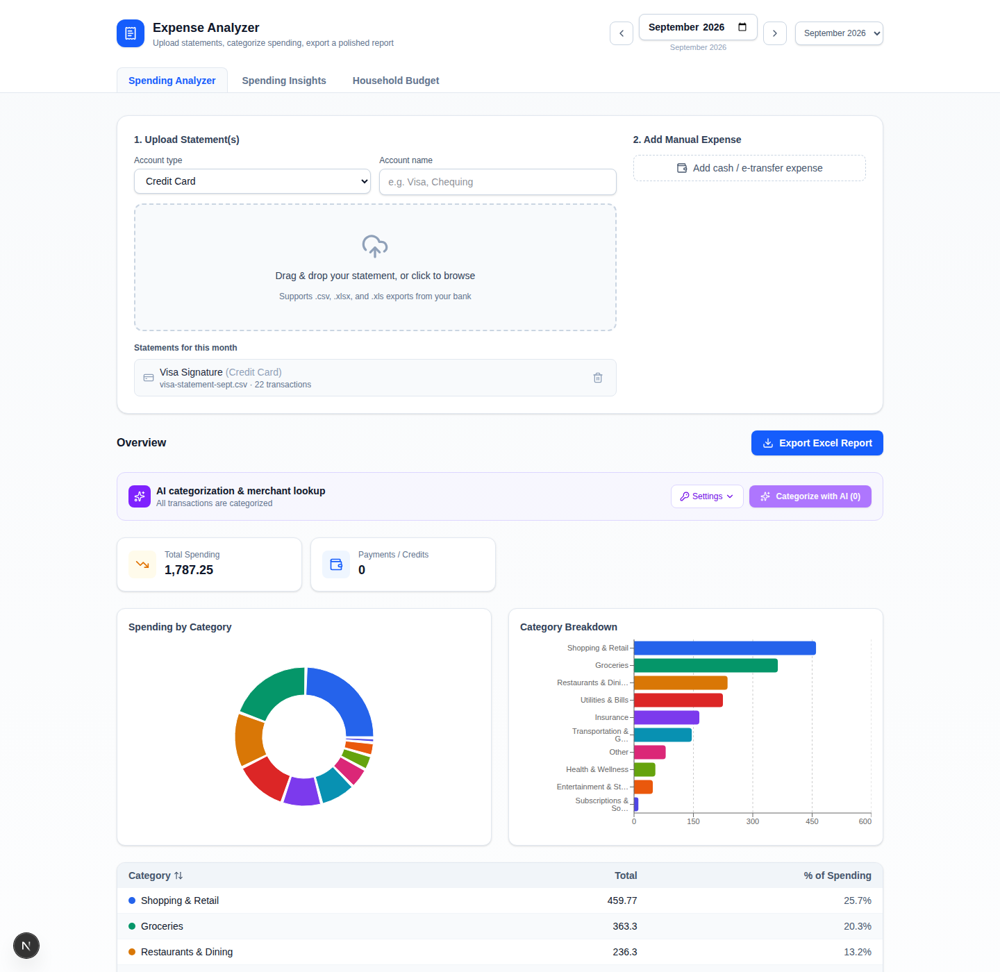
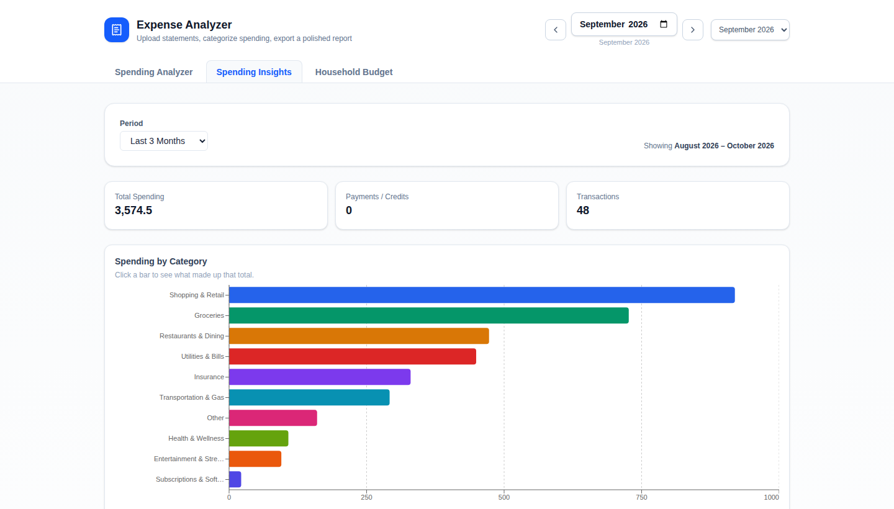
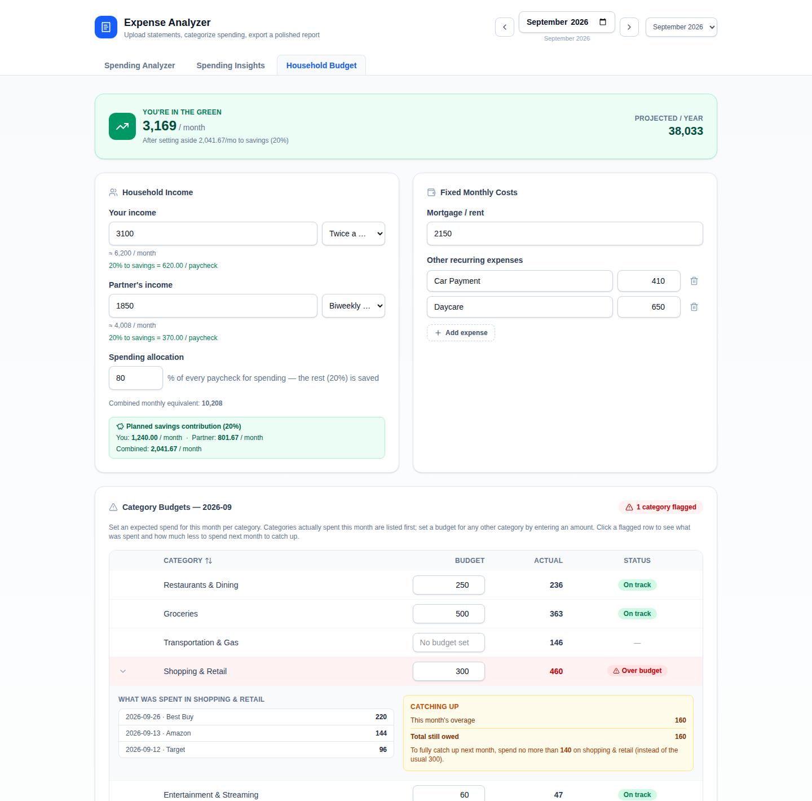

So I built this: drop in your credit card and bank statements, let it sort every purchase into a category, and see exactly how your household's income, mortgage, and savings goal actually add up — down to the dollar. No spreadsheet gymnastics, no subscription, no cloud upload. It just runs on your own machine.
Free. Your statements never leave your computer.
Real screens from the app (with made-up sample numbers, not anyone's actual statement).

Drop in as many credit card and bank statements as you have for the month — they're combined automatically. Every transaction gets a category, a cleaned-up merchant name, and a spot in the donut chart and ranked table below. One click exports the whole thing to a polished Excel report.

Zoom out to any range — one month, three months, a full year — and see spending by category as a bar chart. Click any bar to drill straight into the transactions behind it: what it was, where, and when.

Enter both incomes (any pay schedule — biweekly, twice-monthly, whatever), the mortgage, and a savings percentage you want set aside from every paycheck. Set an expected spend per category, and if you go over, it's flagged — with the exact amount you're over by, and how much less to spend next month to catch back up.
I built this for my own household — tracking spending across two people's credit cards, a shared mortgage, and the occasional e-transfer that never shows up on a statement. Every feature exists because we actually wanted it: the carry-over catch-up math, the "80% to savings" allocation, the ability to say something was "Other" and have it stay that way next time I check that month.
If it's useful to you too, it's free — download it below.
Not every feature gets its own screenshot — here's the rest.
Several credit cards, bank statements, and cash/e-transfer entries per month, all combined and kept for whenever you navigate back to that month.
Bring an OpenAI or Gemini key to auto-sort transactions and clean up cryptic merchant names. Manual corrections are remembered for next time.
A multi-sheet .xlsx workbook — summary totals, category rankings with heat-map coloring, and the full transaction list — ready to share or archive.
Run it once and let everyone in the household open the same budget from their own phone or laptop, no separate install.
No installation, no Node.js required — each download bundles its own
runtime. Unzip, double-click to start, and your browser opens
automatically. Your data is saved locally in a data folder
next to the app.
Check the releases page for all versions and release notes.
Unzip the folder for your OS and double-click the start script. A local server starts and your browser opens to it automatically.
Drag in credit card and bank statement exports (.csv, .xlsx, .xls) for the month. Upload as many as you need — they're combined automatically.
Built-in rules (optionally boosted with your own AI key) sort every transaction into a category. Fix anything that needs a manual nudge — it's remembered for next time.
Enter income for both partners (any pay frequency), fixed costs, a savings percentage, and expected spend per category.
Spending insights, green/red monthly status, flagged overspending with carryover, and a ready-to-export Excel report.